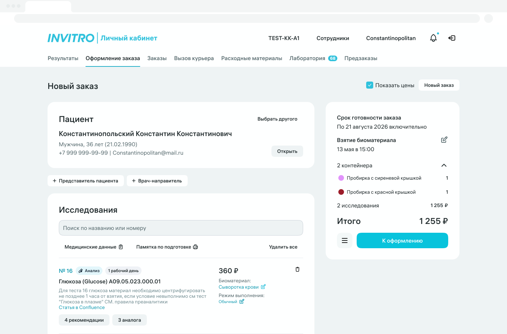

Администратор / медсестра
Заказ, печать, статусы, результаты — “всё в одной ладони”.
Клиника не должна прыгать между АРМПС/сайтом/почтой/мессенджерами. В ЛК КК всё на месте: заказ → штрих‑код → статус → результат.


Мы делаем ЛК единым “домом” для взаимодействия клиники с ИНВИТРО — чтобы процесс ощущался быстрым, чистым и предсказуемым.
Коротко. Визуально. По делу. Сейчас — черновик структуры, дальше подставим ваши цифры и истории.
Чтобы клиника не искала “где это обсуждали”.

Чем меньше ручного — тем меньше ошибок.

Найти. Сравнить. Скачать. Без лишнего.

Конкретные шаги — без “воды”. Это то, что в ближайших итерациях делает ЛК сильнее.